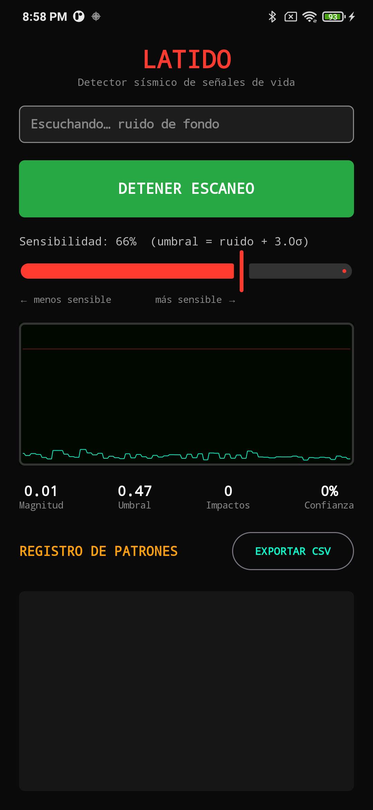

LATIDO
Detector sísmico de señales de vida · Android
Gratis · Código abierto · Android 8.0+
Latido convierte un teléfono Android en un detector sísmico de contacto para
rescate. Apoyas el teléfono sobre la estructura colapsada (una losa, viga o tubo) y la app
escucha con el acelerómetro los golpes de auxilio de una persona atrapada,
distinguiendo un golpeteo rítmico humano del ruido de fondo y avisando con una alarma.

La pantalla muestra en tiempo real:
Osciloscopiola vibración captada y la línea de umbral.
Métricasmagnitud, umbral, nº de impactos y confianza de la detección.
Banner + alarmacuando confirma un patrón: ventana emergente y alarma sonora.
Qué hace y qué parte del teléfono usa
Acelerómetro (alta frecuencia)Es el "oído" de la app: mide microvibraciones transmitidas por la estructura. Usa aceleración lineal (sin gravedad) hasta >200 Hz.
Procesador de señalCalibra el ruido ambiental y fija un umbral adaptativo, para no confundir un golpe real con vibración de fondo.
Detección de ritmoAnaliza la regularidad de los golpes. Solo alerta con un patrón humano sostenido (confianza ≥ 40 %, 4 golpes seguidos).
Altavoz + vibradorAl confirmar, suena una alarma en bucle por el canal de alarma (suena aun en silencio) y vibra el teléfono.
Servicio en segundo planoMantiene el escaneo activo con la pantalla apagada usando un WakeLock y una notificación persistente.
Compartir / CSVExporta el registro de detecciones (hora, magnitud, patrón, confianza) para el relevo entre rescatistas.
Compatibilidad
✓ Compatibles
- Android 8.0 (Oreo) o superior con acelerómetro — la inmensa mayoría de teléfonos.
- Mejor en Android 12+: permite muestreo por encima de 200 Hz (más precisión).
- Ideal con sensor de aceleración lineal (la mayoría de gamas media/alta lo tienen).
✗ No compatibles / limitaciones
- iPhone / iOS: la app es solo Android.
- Android anterior a 8.0 o dispositivos sin acelerómetro (muy raros).
- Xiaomi/MIUI, Huawei, Samsung y otros con ahorro de batería agresivo pueden cortar el escaneo en segundo plano: desactiva la optimización de batería para Latido.
⚠ Aviso. Latido es una herramienta de apoyo, no sustituye al equipo profesional
de búsqueda (geófonos / dispositivos sísmico-acústicos). Detecta bien por contacto directo
o muy cercano, no a metros de distancia. Nunca debe usarse para descartar que haya
una persona: que no detecte no significa que no haya nadie. Valida siempre con los protocolos
del cuerpo de rescate.
Código fuente
filmxora/latido
github.com/filmxora/latido
App nativa Kotlin + Jetpack Compose. Licencia MIT. Incluye el código del motor de detección y sus pruebas.